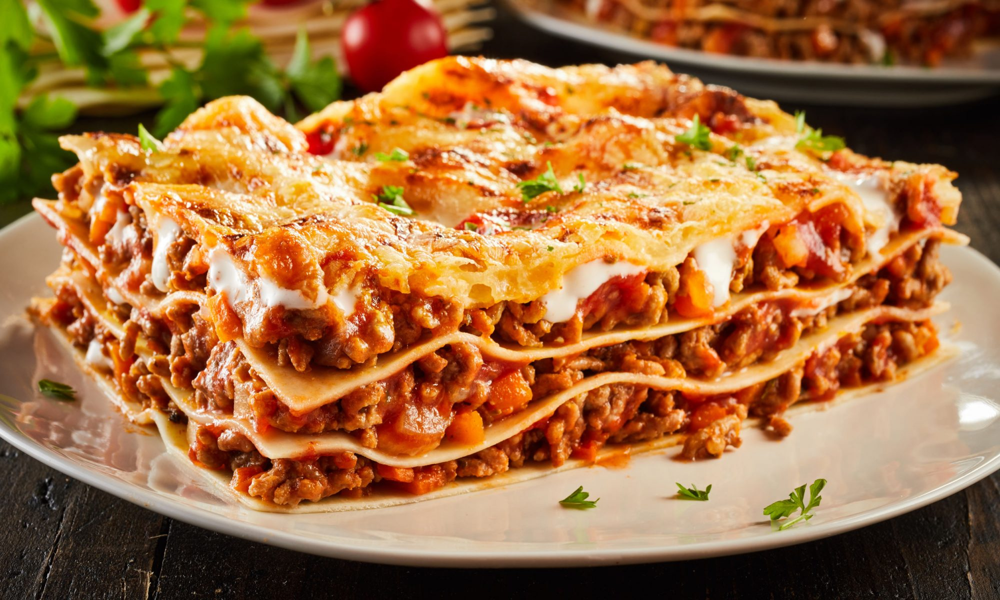

Лазанья

Описание
Это классическое блюдо итальянской кухни можно приготовить и в домашних условиях. Лазанью, к слову, можно подавать не только в качестве повседневного блюда, но и на праздники.
Лазанья с мясным фаршем — это довольно распространенное сегодня блюдо во многих странах. Этот рецепт поможет вам узнать, как приготовить лазанью такой, чтобы она получилась сочной, вкусной и быстрой в приготовлении. Для упрощения задачи можно использовать готовые пластины теста для лазаньи. Это сэкономит время и обеспечит 100% результат.
Ингредиенты
- Лук репчатый
- Фарш
- Мука пшеничная
- Сливочное масло
- Пармезан
- Томатное пюре
- Лазанья
- Молоко
- Листы лазаньи
- Соль, перец по вкусу
Шаги
- Первым делом нарезаем луковицу средним кубиком и обжариваем на разогретой сковороде до появления золотистой корочки.
- Готовый мясной фарш добавляем к луку, жарим, хорошо перемешивая. Посолите и поперчите по вкусу.
- Когда фарш дойдет до готовности, в смесь можно будет добавить томатное пюре. Тушим смесь в течение 10 минут, пока вся влага не испарится, добавьте зелень.
- Готовим "Бешамель". Для него топим сливочное масло на сковородке с толстым дном. На небольшом огне добавляем в растопленное масло муку, тщательно перемешиваем, после постепенно вливаем молоко и продолжаем мешать. Держим на огне в течение 5-ти минут до загустения, добавляя соль, перец и мускатный орех.
- Готовим форму для запекания, предварительно смазав ее маслом, выкладываем листы лазаньи на дно. Сверху поливаем соусом "Бешамель", затем выкладываем мясной фарш и накрываем листом. Повторяем действия, на последнем слое поливаем все соусом.
- Посыпаем лазанью тертым пармезаном и ставим в разогретую до 190 градусов духовку на 30 минут, прикрывая верх слоем фольги.
Home